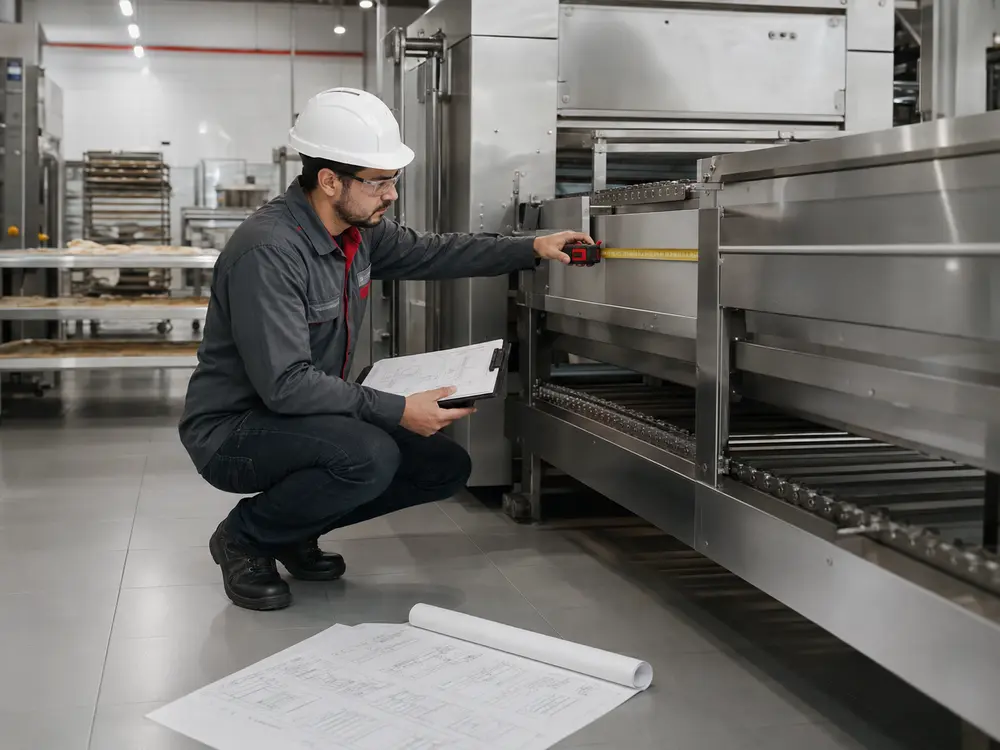
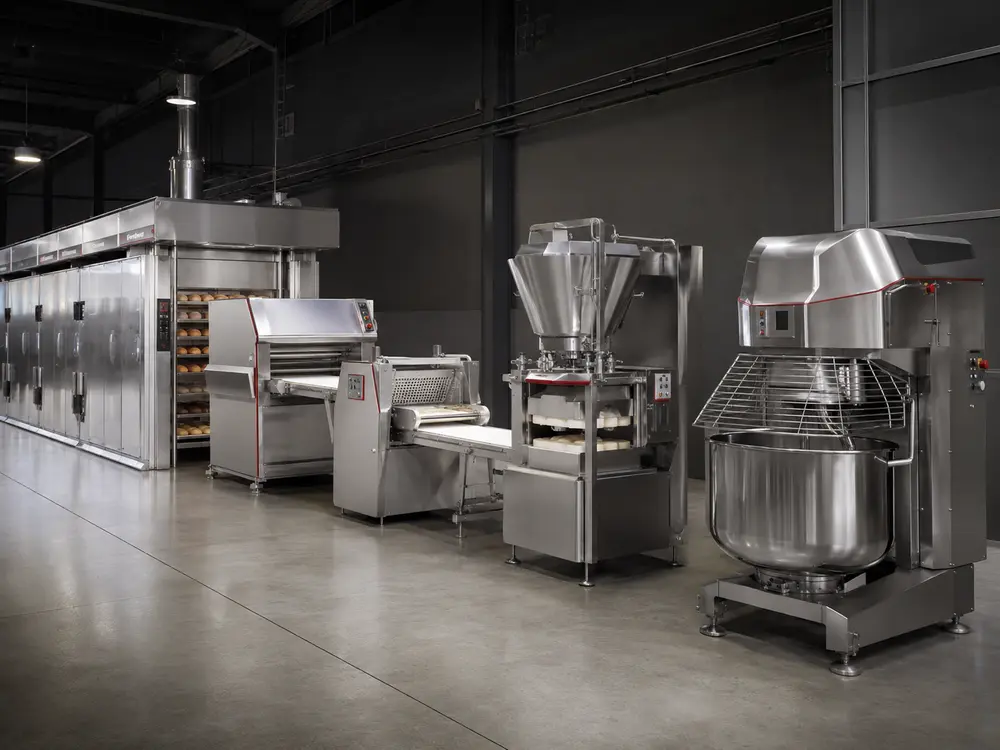
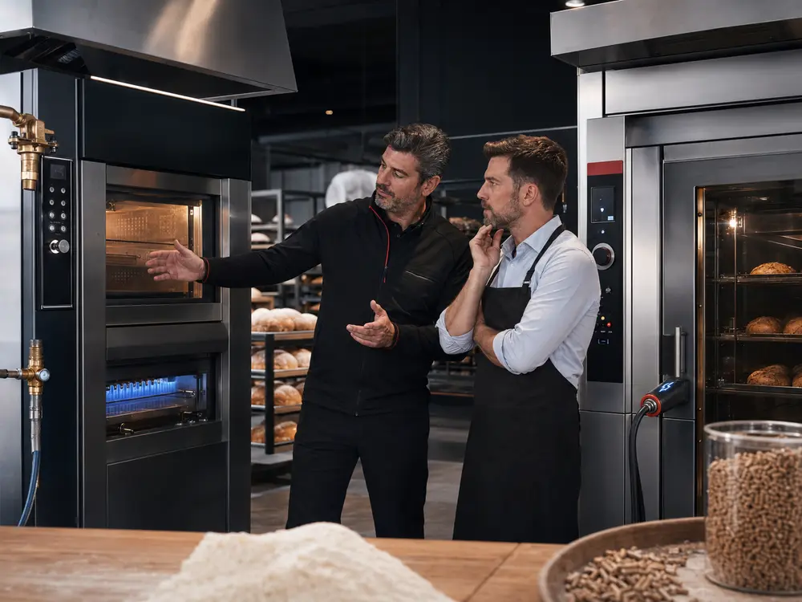

01Orçamento sob medida
Dimensionamento conforme capacidade, tipo de produto e necessidade operacional.
Serviços
A compra de uma máquina industrial precisa considerar produto, volume, fonte de energia, espaço disponível e rotina de produção.

01Dimensionamento conforme capacidade, tipo de produto e necessidade operacional.
Indicação do modelo adequado para padarias, confeitarias, pizzarias e indústrias.

03Fornos, preparo de massa, modelagem, divisão, fatiamento e moagem em um só atendimento.

04Comparação entre versões a gás, elétricas, lenha, pellets e eletrogás.